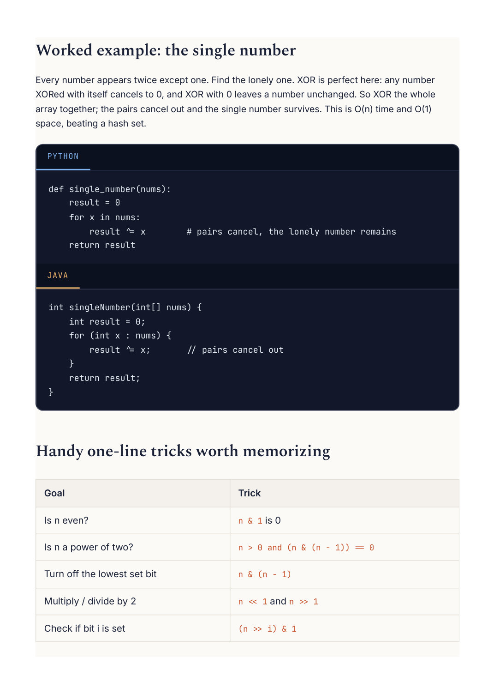

Competitive Programming
Chapter 16
Bit manipulation
Computers store numbers as bits, a row of ones and zeros. A few problems become almost free if you work directly with those bits. You do not need to love binary, you just need a handful of moves.
The operators, in plain terms
Operator What it does
& And
1 only where both bits are 1. Used to test or clear bits.
| Or
1 where either bit is 1. Used to set bits.
^ Xor
1 where the bits differ. A number XORed with itself is 0.
~ Not
Flips every bit. << left shift Shifts bits left, which multiplies by 2 each step. >> right shift Shifts bits right, which divides by 2 each step. 0 1 0 1 5 = 0 0 1 1 XOR gives 1 only in the 3 = columns where the bits differ 0 1 1 0 = 6
Xor =
XOR compares bit by bit and keeps only the differences.
R E A C H F O R B I T S W H E N Y O U S E E
"Find the one number that appears once while all others appear twice" (XOR). "Count the set bits." "Is this a power of two." "Generate all subsets using a bitmask." Anything about flags, toggles, or on/off states packed into a single integer.

Every number appears twice except one. Find the lonely one. XOR is perfect here: any number XORed with itself cancels to 0, and XOR with 0 leaves a number unchanged. So XOR the whole array together; the pairs cancel out and the single number survives. This is O(n) time and O(1) result ^= x # pairs cancel, the lonely number remains
Worked example: count the set bits
Count how many 1s are in the binary form of a number. The elegant way uses the trick above: n & (n - 1) removes the lowest 1 each time. So loop, removing one 1 per step, and count the steps. It runs only as many times as there are set bits, not the full bit width.
def count_bits(n):
count = 0
while n:
n &= n - 1 # clears the lowest set bit
count += 1
return count
int countBits(int n) {
int count = 0;
while (n != 0) {
n &= (n - 1); // clear the lowest set bit
count++;
}
return count;
}
W A T C H O U T
Java integers are 32-bit and signed, so right-shifting a negative number keeps the sign bit; use the unsigned shift >>> when you want zeros pulled in from the left. Python integers have unlimited size and no fixed width, so some bit tricks that rely on overflow behave differently. When a problem mixes negatives and bit shifts, test with a negative input on purpose.
Deeper Intuition
Why bits are secretly sets
The three moves that carry most bit problems are simple: XOR cancels pairs since a number XORed with itself is zero, the expression n and n minus one clears the lowest set bit, and a mask lets you test, set, or clear any single bit. The deeper idea is that an integer is a tiny set: each bit says whether an element is in or out, so counting from zero up to two to the n walks through every possible subset. That is the backbone of bitmask dynamic programming for small inputs. each 3-bit number is one subset of { a, b, c } -> -> 000 100 { } { c } -> -> 001 101 { a } { a, c } -> -> 010 110 { b } { b, c } -> -> 011 111 { a, b } { a, b, c } Treating an integer's bits as in-or-out flags, the numbers 0 to 2^n minus 1 enumerate every subset.
Another worked example: Missing Number
An array holds the numbers 0 to n with exactly one missing. XOR every index together with every value, plus n itself. Every number that is present cancels with its matching index, and the one missing number is left standing. O(n) time and O(1) space.
def missing_number(nums):
result = len(nums) # start with n
for i, x in enumerate(nums):
result ^= i ^ x # XOR all indices and values
return result # the missing one survives
int missingNumber(int[] nums) {
int result = nums.length;
for (int i = 0; i < nums.length; i++)
result ^= i ^ nums[i]; // pairs cancel, missing remains
return result;
}
GOING DEEPER
What kinds of problems this solves
U S E T H I S P A T T E R N F O R
Problems about toggles and flags, finding the odd one out among pairs, enumerating subsets with a bitmask, counting set bits, and quick checks like power of two. Also bitmask dynamic programming for small sets.
Problem type Classic examples XOR tricks Single Number, Single Number II, Single Number III, Missing Number, Find the Difference Counting and checks Number of 1 Bits, Counting Bits, Power of Two, Reverse Bits Bitmask enumeration and Subsets via bitmask, Sum of Two Integers, Maximum XOR of DP Two Numbers, Partition to K Equal Sum Subsets
The algorithm, in a bit more detail
The three moves that carry this chapter are simple. XOR cancels pairs, since a number XORed with itself is zero, so XORing a whole array leaves only the element that appears an odd number of times. The expression n and n minus one clears the lowest set bit, which lets you count set bits in as many steps as there are ones. And a mask lets you test, set, or clear any single bit with a shift.
The more advanced use is treating an integer as a set. Each bit says whether an element is in or out, so a number from zero up to two to the n covers every subset. That is the backbone of bitmask dynamic programming for problems with small n, like assigning tasks or the travelling salesman on a handful of cities.
Variations you will run into
You will use plain XOR for odd one out problems, n and n minus one for counting and power of two checks, and bitmask as a set for enumerating subsets or as a DP state. Shifts double or halve a number cheaply.
Edge cases and gotchas
In Java, right shifting a negative number keeps the sign bit, so use the unsigned shift with three angle brackets when you want zeros pulled in.
Python integers have no fixed width, so tricks that rely on overflow behave differently than in Java or C.
Bitwise operators have low precedence, so wrap them in parentheses inside comparisons.
Be careful mixing signed values and shifts, and test with a negative input on purpose.